zero count의 상한을 입력 비트에 반영하기
cttz·ctlz 결과에 적용한 umin을 입력의 OR 마스크와 하나의 zero count로 바꾼다.
Issue90000.pdf의 전체 내용입니다. 설명·코드·표·검증 기록을 생략하지 않고 옮겼습니다. 그림 안의 문자 인식 결과에는 기호 오류가 있을 수 있어 이미지도 함께 제공합니다.
이 문서의 목차
실습 기록 / Closed Good First InstCombine / 선택한 이슈
Closed Good First InstCombine 실습 기록
1. 선택한 이슈
Issue: LLVM Issue #90000
제목: @min(@ctz(x), y) can become @ctz(x | (1 << y))Issue 링크: https://github.com/llvm/llvm-project/issues/90000
Labels: good first issue , llvm:instcombine , missed-optimization상태: Closed 해결 PR: #90402 PR 링크: https://github.com/llvm/llvm-project/pull/90402
이 이슈는 ctz 또는 clz로 zero count를 계산한 뒤 min으로 결과의 상한을 제한하는 코드를, 입력의 특 정 bit를 미리 1로 설정한 뒤 ctz 또는 clz만 수행하는 형태로 바꾸는 최적화를 제안한다.
왜 이 이슈가 InstCombine 문제라고 판단했는가?
이 문제는 CFG를 변경하거나 특정 하드웨어의 assembly를 직접 수정하는 문제가 아니다. 다음과 같은 LLVM IR instruction 조합을 더 canonical하고 단순한 IR 형태로 바꾸는 문제다.
cttz/ctlz → uminor → cttz/ctlz즉 target-independent한 local IR combine과 canonicalization을 수행하는 InstCombine의 범위에 해 당한다.
실제 코드에서 발생하는 패턴인가?
이슈 작성자는 처음에 u16의 ctz가 특정 bit를 OR한 뒤 tzcnt로 내려가는 assembly를 보고 이론적으 로 아이디어를 얻었다. 이후 benchmark corpus를 검색한 결과 cttz + umin 패턴은 72건과 image-rs, QEMU 사례에서 발견됐지만, ctlz + umin은 해당 benchmark에서는 발견되지 않았다.
2. 핵심 패턴과 instruction
핵심 instruction
페이지 배치·기호·도식 확인하기

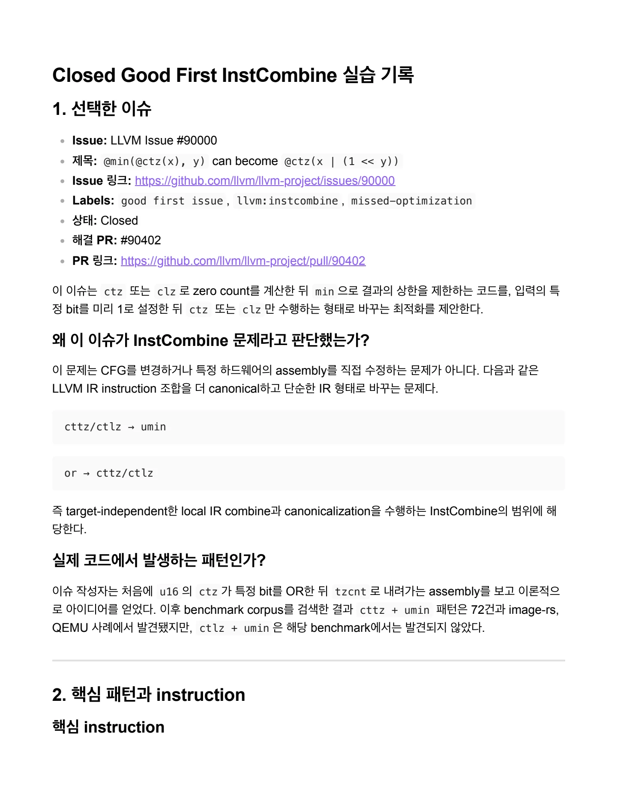
Instruction 의미 / llvm.cttz 정수의 오른쪽, 즉 LSB 쪽에서 연속된 0의 개수를 계산 / llvm.ctlz 정수의 왼쪽, 즉 MSB 쪽에서 연속된 0의 개수를 계산
Instruction | 의미 |
|---|---|
| 정수의 오른쪽, 즉 LSB 쪽에서 연속된 0의 개수를 계산 |
| 정수의 왼쪽, 즉 MSB 쪽에서 연속된 0의 개수를 계산 |
| 두 정수를 unsigned 값으로 해석해 더 작은 값을 반환 |
| 두 bit 중 하나라도 1이면 결과 bit를 1로 설정 |
| OR할 mask의 bit 위치를 계산할 때 사용 |
cttz : Count Trailing Zeros
cttz는 정수의 오른쪽부터 연속된 0의 수를 센다.
x = 0010 1000오른쪽에서 0 → 0 → 0 → 1이므로:cttz(x) = 3ctlz : Count Leading Zeros
ctlz는 정수의 왼쪽부터 연속된 0의 수를 센다.
x = 0001 0100왼쪽에서 0이 세 개 나온 뒤 1이 나오므로:
ctlz(x) = 3원래 패턴
umin(cttz(X), C)umin(ctlz(X), C)cttz 또는 ctlz 결과가 C보다 크면 umin이 결과를 C로 제한한다.
기대 패턴
페이지 배치·기호·도식 확인하기

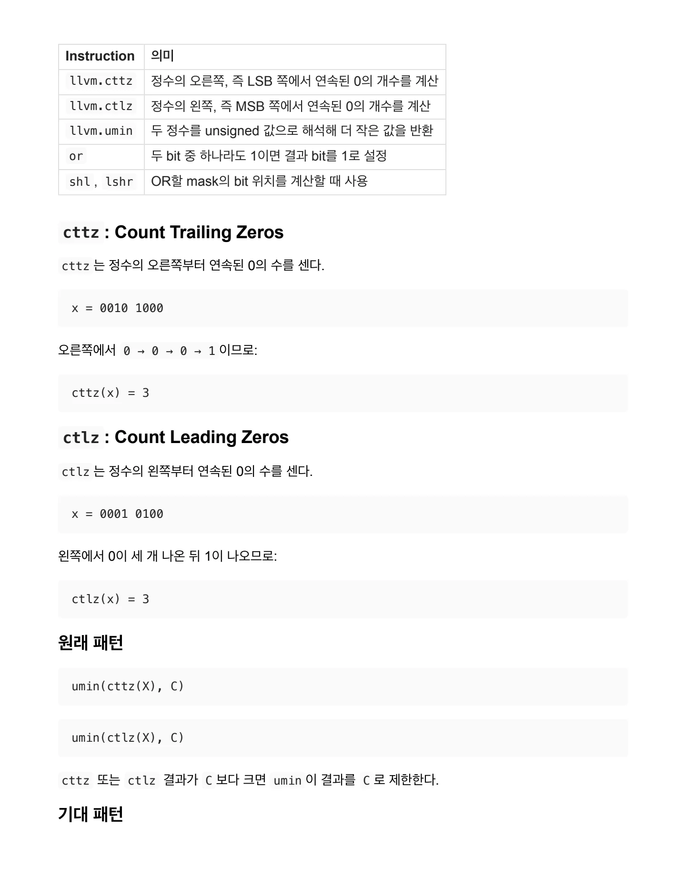
umin(cttz(X), C) / → / cttz(X | (1 << C))
umin(cttz(X), C)
→
cttz(X | (1 << C))umin(ctlz(X), C)
→
ctlz(X | (MSB >> C))cttz의 경우 bit C를 미리 1로 설정한다. 그러면 오른쪽에서 0을 세더라도 늦어도 bit C에서 1을 만나므로 결과가 C를 초과할 수 없다.
ctlz의 경우 최상위 bit 하나만 1인 MSB를 C만큼 오른쪽으로 이동한 위치를 설정한다. 그러면 왼쪽에서 0을 셀 때 결과가 C를 초과하지 않는다.
상수 6인 대표 사례
umin(cttz(X), 6)
→
cttz(X | 64)64 = 1 << 6i16 의 ctlz 에서는 최상위 bit index가 15이므로:
umin(ctlz(X), 6)
→
ctlz(X | 512)512 = (1 << 15) >> 6
= 1 << 9이슈 원문의 최초 ctlz 식은 (1 << 16) >> 6 을 사용해 bit 10을 설정하는 off-by-one 오류가 있었다. 댓글에서 16비트의 MSB index는 15이므로 (1 << 15) >> 6 이 맞다고 수정됐다.
두 식이 같은 이유
cttz를 예로 들면 두 경우로 나눌 수 있다.
cttz(X) < C 라면 bit C 보다 오른쪽에 이미 1이 있으므로 bit C 를 설정해도 원래 zero count가 바 뀌지 않는다.
페이지 배치·기호·도식 확인하기

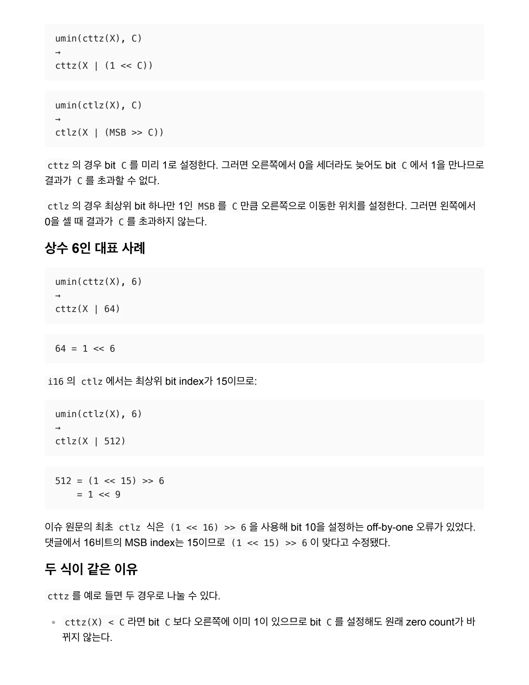
cttz(X) >= C 라면 bit C 를 새로 설정했을 때 가장 오른쪽의 1이 bit C 에 생기므로 결과가 정확히 / C / 가 된다.
cttz(X) >= C라면 bit C를 새로 설정했을 때 가장 오른쪽의 1이 bit C에 생기므로 결과가 정확히 C가 된다.
따라서:cttz(X | (1 << C))
=
umin(cttz(X), C)가 성립한다. ctlz도 MSB 방향에서 같은 원리가 적용된다.
3. Alive2 검증 / IR 관찰
검증 도구
도구: Alive2 online Compiler Explorer 본 실습에서 직접 재현한 Alive2: https://alive2.llvm.org/ce/z/o-bFDy Issue 댓글에서 RKSimon이 제시한 cttz proof: https://alive2.llvm.org/ce/z/zUH_Ny Issue 댓글에서 RKSimon이 제시한 ctlz proof: https://alive2.llvm.org/ce/z/yb4r54 직접 검증한 범위: scalar i16 , 상수 상한 6, cttz , is_zero_poison=false
Alive2는 assembly를 생성하는 도구가 아니라, Source IR을 Target IR로 바꾸어도 LLVM 의미론상 안전 한지를 검증하는 도구다.
Alive2 링크별 검증 범위
직접 재현한 링크는 본 실습에서 작성한 scalar i16 , 상수 6의 reduced src/tgt 를 검증한 결 과다. RKSimon의 cttz proof는 %a1 <= 15 조건 아래 변수 상한을 사용한 일반화된 변환을 검증한 다. RKSimon의 ctlz proof는 이슈 원문의 off-by-one 오류를 수정한 뒤, MSB 기반 변환을 검증한 다.
Source IR
declare i16 @llvm.cttz.i16(i16, i1 immarg)
declare i16 @llvm.umin.i16(i16, i16)define i16 @src_cttz_const6(i16 %x) {페이지 배치·기호·도식 확인하기

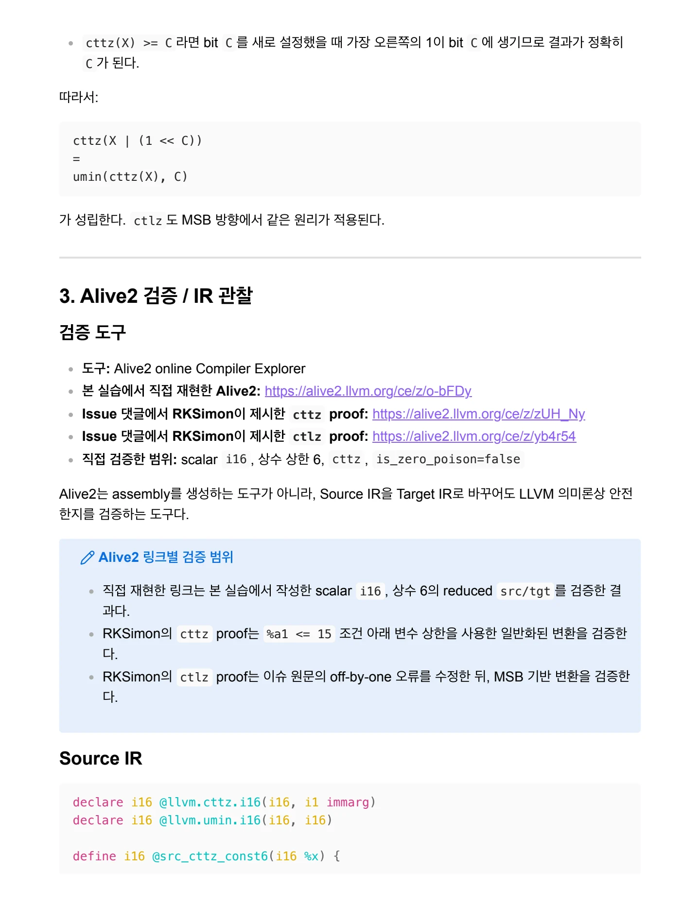
%tz = call i16 @llvm.cttz.i16(i16 %x, i1 false) / %result = call i16 @llvm.umin.i16(i16 %tz, i16 6) / ret i16
%tz = call i16 @llvm.cttz.i16(i16 %x, i1 false)
%result = call i16 @llvm.umin.i16(i16 %tz, i16 6)
ret i16 %result
}Target IR
declare i16 @llvm.cttz.i16(i16, i1 immarg)define i16 @tgt_cttz_const6(i16 %x) {
%bounded = or i16 %x, 64
%result = call i16 @llvm.cttz.i16(i16 %bounded, i1 false)
ret i16 %result
}결과
Transformation seems to be correct!따라서 scalar i16 , 상수 6, zero-defined cttz 형태에서는 Source를 Target으로 바꾸어도 의미가 보 존됨을 확인했다.
내가 이해한 안전 조건
mask를 만들 때 bit 위치와 정수 비트폭을 올바르게 처리해야 한다. C < bitwidth 이면 해당 위치에 bit를 설정해 bounded zero count를 만든다. C >= bitwidth 이면 zero-count 결과가 원래부터 C 이하이므로 umin 만 제거할 수 있다.
cttz/ctlz 의 is_zero_poison 인자가 true 와 false 인 경우를 모두 고려해야 한다.OR를 적용한 Target 입력은 특정 bit가 반드시 1이므로 0이 될 수 없다. 이슈 댓글의 Alive2 proof에서는 0 <= C < bitwidth인 변수 상한에 대해서도 수학적으로 변환이 성 립했다. 그러나 변수 상한을 실제 패치에서 지원할지는 의미 보존과 별개로 runtime mask 계산 비용을 고려해야 한다.
4. Compiler Explorer / Assembly 관찰
도구: Compiler Explorer(Godbolt) 본 실습에서 직접 재현한 LLVM IR/assembly 비교: https://godbolt.org/z/MW3snjq9x
이 페이지에 연결된 자료
페이지 배치·기호·도식 확인하기

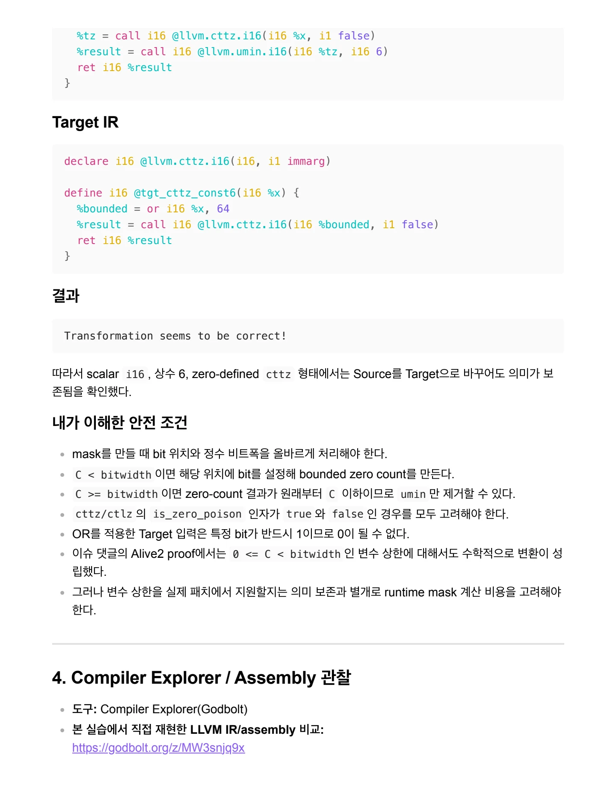
Issue 작성자의 Zig/assembly 예제를 재현해 저장한 Godbolt: / https://zig.godbolt.org/z/fzMo9jYPK / Issue 링크:
Issue 작성자의 Zig/assembly 예제를 재현해 저장한 Godbolt: https://zig.godbolt.org/z/fzMo9jYPK Issue 링크: https://github.com/llvm/llvm-project/issues/90000
직접 재현 환경
다음 환경은 본 실습에서 LLVM IR src/tgt를 직접 비교할 때 사용한 설정이다.
Compiler: LLVM llc 19.1.0
Target triple: x86_64-unknown-linux-gnuCPU: znver4
옵션:-O2 -mtriple=x86_64-unknown-linux-gnu -mcpu=znver4Alive2가 Source와 Target 사이의 의미 보존을 검사한다면, Compiler Explorer는 두 IR에서 실제로 생성 되는 assembly와 codegen 차이를 확인하는 데 사용했다.
두 Godbolt 결과의 역할
Issue 작성자의 예제를 재현한 Godbolt는 원래 Zig 함수 4개와 그로부터 생성된 assembly를 보 여준다. 본 실습의 Godbolt는 최적화의 핵심만 남긴 LLVM IR src/tgt를 동일한 llc 조건에서 비교한 다.
전자는 문제를 처음 제시한 원본 사례를 확인하기 위한 자료이고, 후자는 같은 현상을 reduced LLVM IR 수준에서 독립적으로 재현한 결과다.
Zig Godbolt 재현 결과
공유 링크에서 Issue 원문의 Zig 함수 4개와 대응 assembly가 재현됐다.
현재 결과에는 함수 prologue/epilogue인 다음 명령이 추가되어 있다.
push rbp
mov rbp, rsp
pop rbp
ret페이지 배치·기호·도식 확인하기

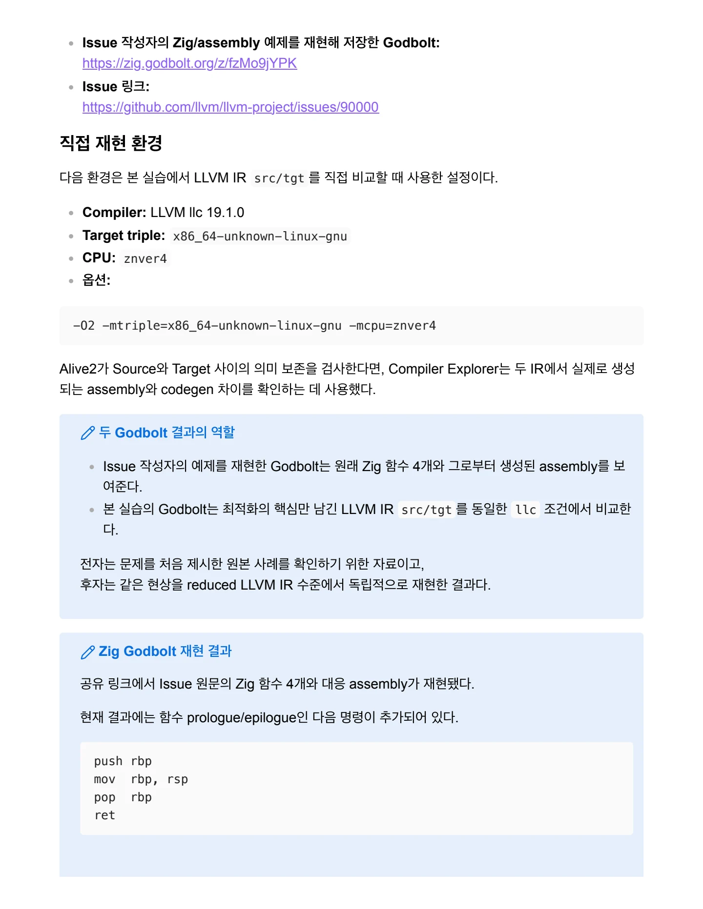
이 명령들은 함수의 stack frame을 설정하고 복구하는 코드이며, 이번 최적화의 핵심 비교에는 영향을 / 주지 않는다. / Issue 원문의 ctlz 오타
이 명령들은 함수의 stack frame을 설정하고 복구하는 코드이며, 이번 최적화의 핵심 비교에는 영향을 주지 않는다.
Issue 원문의 ctlz 오타
Issue 작성자의 최초 bounded_lzcnt_better 는 (1 << 16) >> 6 을 사용하므로 다음 명령이 생성된다.
or edi, 1024그러나 16비트 정수의 최상위 bit index는 15이므로 댓글에서 수정된 올바른 식은 (1 << 15) >> 6 이다.
(1 << 15) >> 6
= 1 << 9
= 512따라서 수정된 변환에 대응하는 올바른 mask는 512다.
Source Assembly
src:
or edi, 65536
mov eax, 6
tzcnt ecx, edi
cmp cx, 6
cmovb eax, ecx
retor edi, 65536 은 cttz i16 %x, false 의 zero-input 결과를 16으로 만들기 위한 처리다.
65536 = 1 << 16x86 코드에서는 32비트 tzcnt를 사용하므로 아무 처리 없이 0을 입력하면 결과가 32가 된다. bit 16을 미 리 설정하면 하위 16비트가 모두 0일 때 결과가 16이 되어 LLVM i16의 zero-defined 의미를 구현할 수 있다.
그 뒤:
페이지 배치·기호·도식 확인하기

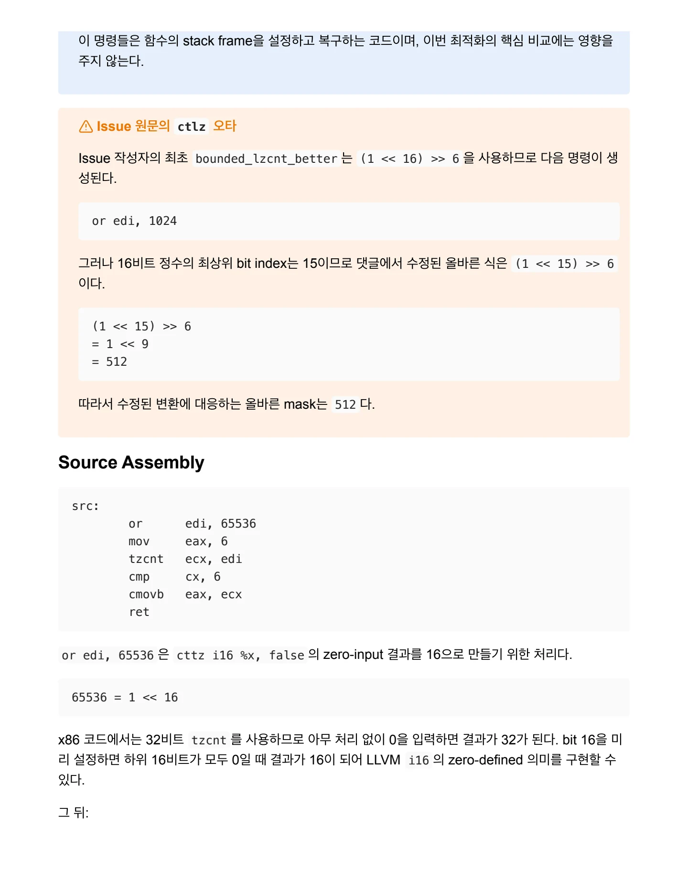
mov / cmp / cmovb
mov
cmp
cmovb가 umin(cttz(X), 6) 을 구현한다.Target Assembly
tgt:
or edi, 64
tzcnt eax, edi
retbit 6을 미리 1로 만들었으므로 tzcnt 결과가 이미 최대 6으로 제한된다. 따라서 별도의 mov, cmp, cmovb 가 필요 없다.
관찰한 차이
구분 | Source | Target |
|---|---|---|
IR 구조 | | |
핵심 IR instruction 수 | 2 | 2 |
Assembly | | |
IR instruction 수는 두 형태 모두 2개이지만, LLVM IR instruction과 machine instruction은 일대일 대응 하지 않는다. Source의 umin 은 x86에서 여러 machine instruction으로 내려가지만 Target의 or 는 단 일 명령으로 내려가므로 실제 codegen이 개선됐다.
추가 성능 관찰 계획
llvm-mca를 사용한다면 다음 지표를 비교한다.
Instructions Total uOps Block RThroughput
Latency Dependency chain
Resource pressure
특히 Source의:
페이지 배치·기호·도식 확인하기

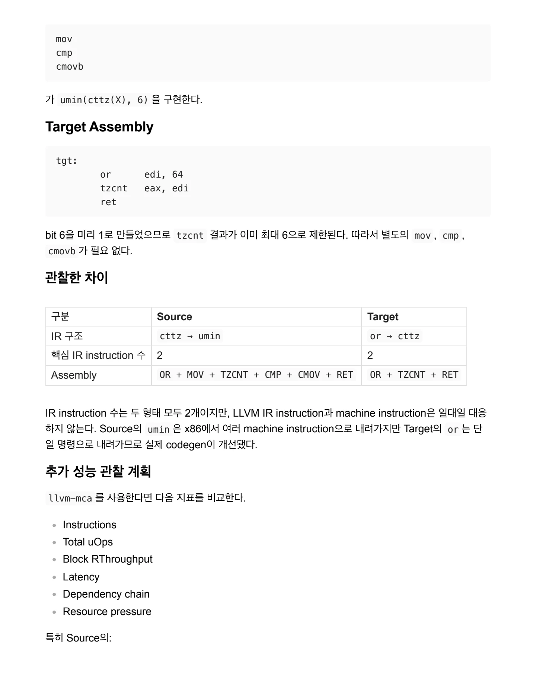
tzcnt → cmp → cmovb / 직렬 의존 경로가 Target에서 제거되는지를 확인한다. / 테스트 계획
tzcnt → cmp → cmovb직렬 의존 경로가 Target에서 제거되는지를 확인한다.
5. 테스트 계획
테스트 파일 위치 후보
llvm/test/Transforms/InstCombine/Positive test
테스트 | 목적 |
|---|---|
scalar i16 , cttz , 상수 6 | 대표 변환 확인 |
ctlz , 상수 6 | 대칭적인 leading-zero 변환 확인 |
zero flag true , false | zero semantics 확인 |
commuted operand | |
| 비트폭 독립성 확인 |
uniform splat vector | vector의 동일 상한 처리 확인 |
기본 기대 결과:
umin(cttz(X), 6)
→
cttz(X | 64)umin(ctlz(X), 6)
→
ctlz(X | 512)Edge test
테스트 | 확인 내용 |
|---|---|
| 최솟값 경계 |
페이지 배치·기호·도식 확인하기

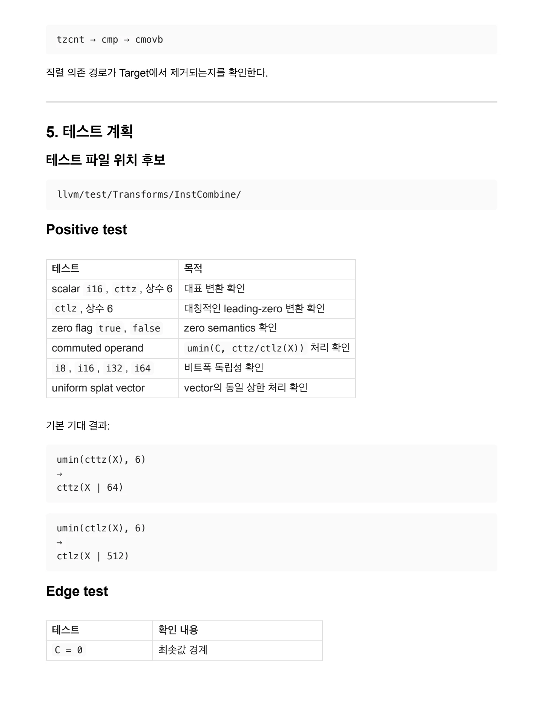
테스트 확인 내용 / C = bitwidth - 1 마지막 유효 bit index / C >= bitwidth mask 없이 umin 만 제거 가능한지
테스트 | 확인 내용 |
|---|---|
| 마지막 유효 bit index |
| mask 없이 umin만 제거 가능한지 |
| 특수 비트폭 처리 |
poison 포함 vector | poison 의미론 및 matcher 적용 여부 |
Negative test
테스트 | 변환하지 않는 이유 |
|---|---|
상한이 런타임 변수 | runtime mask 계산으로 instruction 증가 가능 |
zero-count 결과가 multi-use | 기존 연산을 제거할 수 없어 새 연산이 추가됨 |
non-splat vector | lane별 mask 처리로 구현 복잡도 증가 |
poison lane 포함 vector | 단순한 splat 상수 matcher 조건을 만족하지 않음 |
Negative test는 테스트 자체가 실패해야 한다는 의미가 아니라, 적용 조건을 만족하지 않는 IR이 잘못 변환 되지 않고 유지되는지를 확인하는 테스트다. 상세 분석에서 계획한 테스트 범위는 기본·대칭·zero flag·비트 폭·경계·multi-use·vector까지 포함했다.
6. 패치 위치 추정
Root instruction
llvm.uminSource 패턴의 최상위에서 결과를 만들고 Target에서 제거되는 instruction이 llvm.umin 이므로 이를 root로 판단했다.
llvm.umin
├── llvm.cttz 또는 llvm.ctlz
└── 상한 C구현 파일 후보
llvm/lib/Transforms/InstCombine/InstCombineCalls.cpp페이지 배치·기호·도식 확인하기

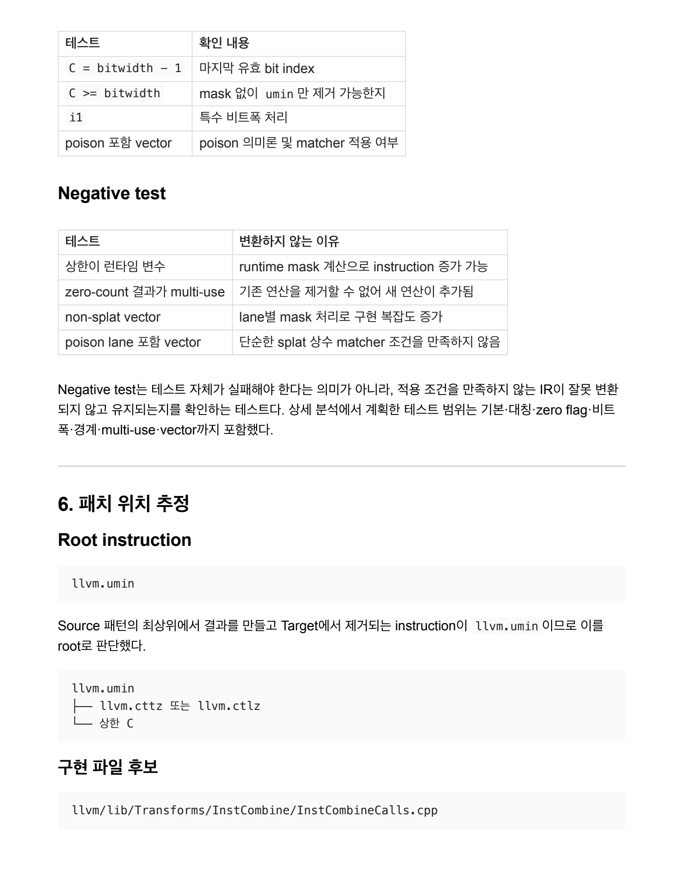
llvm.umin , llvm.cttz , llvm.ctlz 가 모두 LLVM intrinsic call이므로 call 및 intrinsic fold를 처리 / 하는 / InstCombineCall
llvm.umin , llvm.cttz , llvm.ctlz 가 모두 LLVM intrinsic call이므로 call 및 intrinsic fold를 처리 하는 InstCombineCalls.cpp 가 자연스러운 후보라고 판단했다.
함수 후보
InstCombinerImpl::visitCallInst또는 visitCallInst 에서 호출하는 별도 helper를 예상했다.
사용할 수 있을 것으로 예상한 PatternMatch
cttz/ctlz intrinsic matcher
m_Value(X)m_APInt(C)m_OneUse(...)commutative operand 처리
개념적으로 예상한 match는 다음과 같다.
llvm.umin(
one-use llvm.cttz/ctlz(X),
constant C
)예상 조건의 분류
조건 | 분류 |
|---|---|
bitwidth에 맞는 mask 생성 | 정확성·경계 처리 |
zero flag 처리 | 정확성 |
상한이 상수 | 수익성 |
zero-count 결과가 one-use | 수익성 |
vector 지원 범위 | 구현 복잡도와 유지보수성 |
7. 실제 Merged Patch 학습
실제 PR: #90402 PR 링크: https://github.com/llvm/llvm-project/pull/90402
이 페이지에 연결된 자료
페이지 배치·기호·도식 확인하기

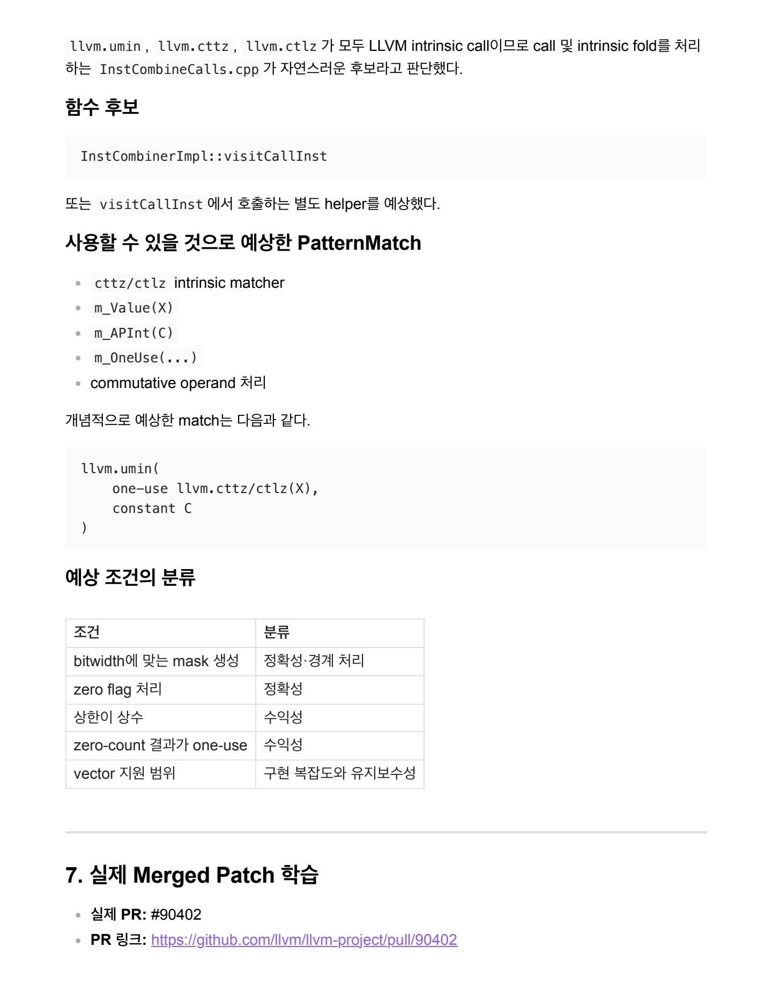
PR 작성자가 제시한 Alive2 proofs: https://alive2.llvm.org/ce/z/y8Hdb8 / 상태: Merged / 실제 변경 파일
PR 작성자가 제시한 Alive2 proofs: https://alive2.llvm.org/ce/z/y8Hdb8 상태: Merged
실제 변경 파일
파일 | 변경 내용 |
|---|---|
| 추가 |
| 실제 InstCombine 변환 구현 |
| 전용 테스트 추가 |
실제 패치는 cttz/ctlz 구조, 상수 상한, one-use 조건을 matcher로 표현하고, APInt를 사용해 비트폭 에 맞는 mask를 생성한다. 상세 분석에서는 변경 파일과 테스트·matcher·변환 로직을 순서대로 확인했다.
PR의 커밋과 변경 파일 수
이 PR은 테스트를 먼저 추가한 커밋과 실제 변환을 구현한 커밋, 총 2개 커밋으로 구성된다.
구현 커밋만 보면 PatternMatch.h 와 InstCombineCalls.cpp 의 2개 파일이보이지만, 테스트 사전 커밋까지 포함한 PR 전체 diff에서는 umin_cttz_ctlz.ll 을 포함해 총 3개 파일이 변경됐다.
PR Full diff: https://github.com/llvm/llvm-project/pull/90402.diff
실제 핵심 matcher
match(I0, m_OneUse(m_Cttz(m_Value(X), m_Value(Z)))) &&
match(I1, m_APInt(Y))각 matcher의 의미는 다음과 같다.
Matcher | 의미 |
|---|---|
| operand가 llvm.cttz 호출인지 검사 |
| operand가 llvm.ctlz 호출인지 검사 |
| zero-count의 원래 입력 추출 |
| |
페이지 배치·기호·도식 확인하기

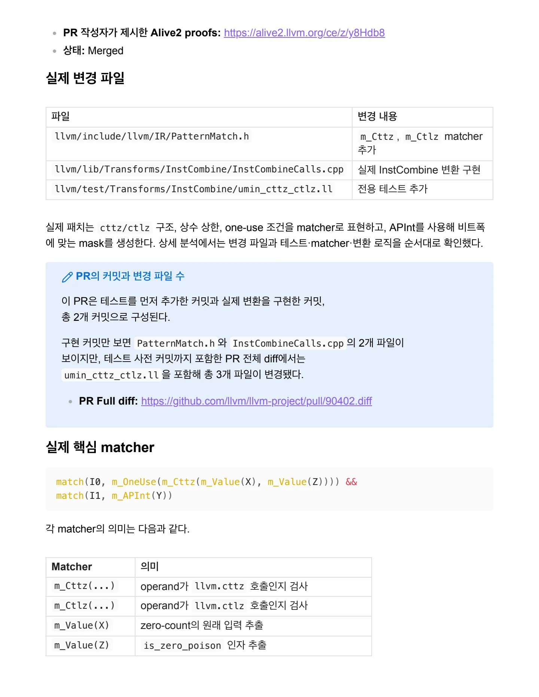
Matcher 의미 / m_OneUse(...) zero-count 결과가 한 번만 사용되는지 검사 / m_APInt(Y) 상한이 scalar 또는 uniform splat 정수 상수인지 검사
Matcher | 의미 |
|---|---|
| zero-count 결과가 한 번만 사용되는지 검사 |
| 상한이 scalar 또는 uniform splat 정수 상수인지 검사 |
m_OneUse는 의미 보존 조건이라기보다 수익성 조건이다. 기존 cttz/ctlz가 다른 곳에서도 사용된다면 기존 연산을 제거할 수 없어 or + 새로운 zero-count가 추가되기 때문이다.
m_APInt 는 scalar 상수뿐 아니라 모든 lane이 같은 uniform splat vector도 처리한다. 반면 non-splat vector와 poison lane이 포함된 형태는 최종 패치 범위에서 제외된다.
실제 mask 생성
cttz :mask = 1 << Cctlz :mask = MSB >> CC < bitwidth 이면 mask를 OR해 bounded zero count를 생성한다.
umin(cttz(X), C)
→
cttz(X | mask)C >= bitwidth 이면 zero-count 결과가 이미 C 이하이므로 mask를 추가하지 않고 umin 만 제거한다.
Zero flag 처리
핵심 변환은 원래 is_zero_poison 값 Z 를 새 intrinsic에 그대로 전달한다.
cttz(X, Z)
→
cttz(X | mask, Z)최종 테스트 결과에서 false가 true로 바뀌는 것은 이 변환이 직접 flag를 변경해서가 아니라, X | mask 가 non-zero임을 다른 InstCombine 로직이 확인해 후속 canonicalization을 수행한 결과다.
사전 예상과 실제 패치 비교
페이지 배치·기호·도식 확인하기

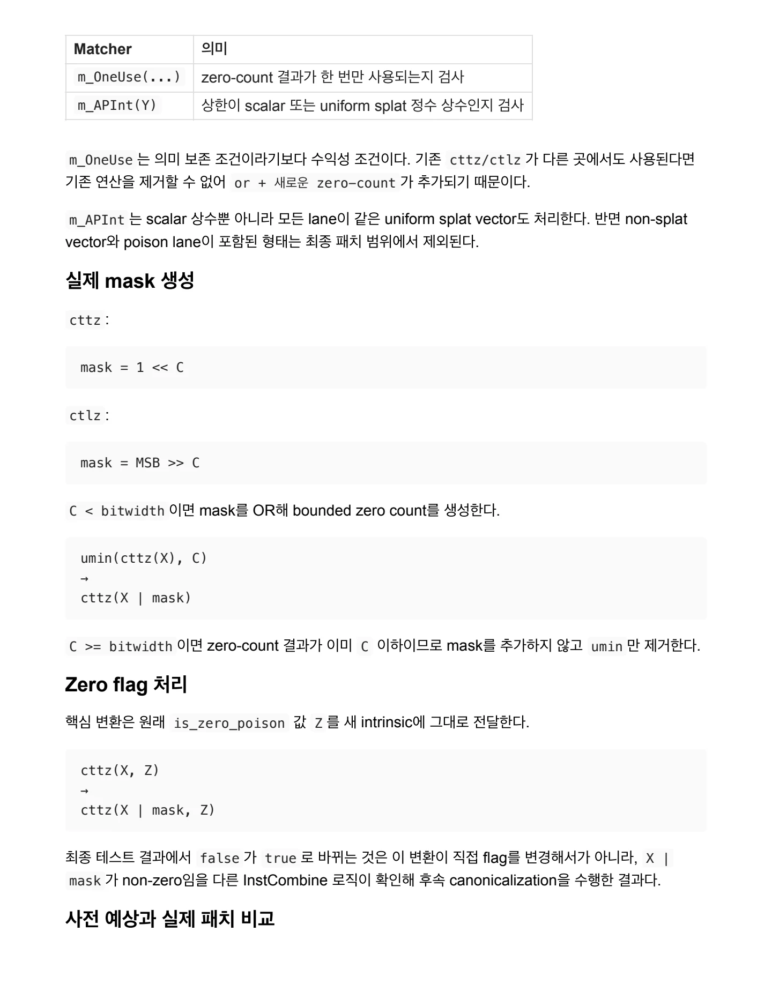
항목 사전 예상 실제 패치 / Pass InstCombine InstCombine / Root llvm.umin llvm.umin
항목 | 사전 예상 | 실제 패치 |
|---|---|---|
Pass | InstCombine | InstCombine |
Root | | |
구현 파일 | | 일치 |
함수 | | |
상한 조건 | 상수 | |
one-use | 필요 | |
| 모두 지원 | 모두 지원 |
scalar | 기본 지원 | 지원 |
vector | 별도 검토 | uniform splat 지원 |
non-splat vector | 미확정 | 미지원 |
zero flag | 별도 처리 예상 | 기존 Z 보존 후 후속 fold |
| 별도 fold 가능성 | OR 없이 umin 제거 |
테스트 파일 | 기존 또는 전용 | 전용 파일 신규 생성 |
리뷰에서 확인한 핵심 쟁점
변수 상한은 수학적으로 변환 가능하지만 runtime mask 계산으로 instruction이 증가할 수 있어 지원하 지 않았다. non-splat vector 지원은 lane별 mask 처리로 구현 복잡도가 크게 증가해 최종 범위에서 제외됐다. Alive2 proof의 assume 조건은 실제 C++ 구현의 적용 조건과 대응해야 한다. PatternMatch는 코드를 짧게 만드는 문법을 넘어 IR 구조와 적용 조건을 선언적으로 표현한다. 더 많은 입력을 지원하는 것보다 수익성, 코드 복잡도, 유지보수성을 고려해 범위를 제한하는 것이 중요하 다.
AI에게 질문한 내용
llvm.cttz , llvm.ctlz , llvm.umin 이 각각 어떤 의미를 가지는지 질문했다.bit C를 OR하면 zero-count 결과가 왜 C를 초과하지 않는지 확인했다. m_Cttz , m_Ctlz , m_APInt , m_OneUse 가 어떤 IR 구조와 조건을 표현하는지 질문했다. 상수 상한은 지원하면서 변수 상한을 지원하지 않는 이유가 정확성인지 수익성인지 확인했다. zero flag Z가 보존되지만 최종 테스트에서 false가 true로 바뀌는 이유를 확인했다. uniform splat vector는 지원하지만 non-splat vector는 제외된 이유를 리뷰 내용과 비교했다. positive, negative, edge test가 각각 어떤 적용 범위를 고정하는지 확인했다. 사전에 추정한 패치 위치와 실제 merged patch의 차이를 비교했다.
페이지 배치·기호·도식 확인하기

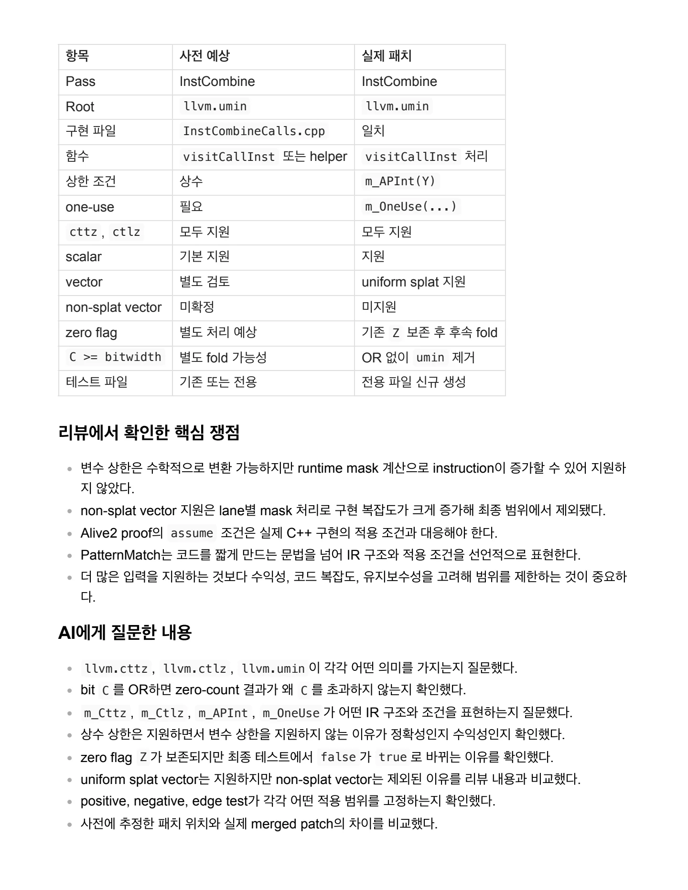
새롭게 이해한 개념 / LLVM / 정확성과 수익성은 별개의 판단 기준이다.
새롭게 이해한 LLVM 개념
정확성과 수익성은 별개의 판단 기준이다. root instruction을 기준으로 구현 파일과 visitor를 추정할 수 있다. PatternMatch는 IR 구조와 적용 조건을 선언적으로 표현한다. m_APInt 는 scalar와 uniform splat constant를 처리할 수 있다. m_OneUse는 기존 연산을 제거할 수 있는지 판단하는 수익성 조건으로 사용된다. 테스트는 positive뿐 아니라 negative와 edge case까지 포함해야 한다. 리뷰에서는 의미 보존뿐 아니라 패치 위치, 수익성, 복잡도와 유지보수성도 함께 판단한다.
8. 다음에 혼자 시도할 때 보완할 점
이슈를 읽은 직후 핵심 instruction과 변환 원리를 먼저 한 문장과 수식으로 정리한다. cttz , ctlz , zero flag처럼 변환의 핵심이 되는 LLVM 의미론을 LangRef에서 직접 확인한다. 실제 PR을 보기 전에 root instruction, 구현 파일, 함수와 matcher 후보를 먼저 기록한다. Alive2 검증에서 대표 case뿐 아니라 bitwidth와 zero flag 조건을 체계적으로 구분한다. Alive2 링크와 Compiler Explorer 링크를 실습 즉시 저장한다. llvm-mca 를 직접 실행해 uOps와 throughput 차이를 수치로 남긴다. 테스트를 positive, negative, edge로 나누어 계획한다. 실제 패치는 테스트 → matcher → 변환 생성 → 리뷰 순서로 읽는다. AI 설명은 실제 diff, LLVM LangRef, PatternMatch 문서와 llvm-lit 결과로 다시 확인한다.
최종 정리
이 실습에서는 missed optimization을 발견한 뒤 변환 원리를 해석하고, src/tgt IR 작성, Alive2 의미 보존 검증, assembly 관찰, 테스트·패치 위치 추정, 실제 merged patch와 리뷰 분석까지 전체 InstCombine 기여 흐름을 복기했다.
핵심적으로 배운 점은 올바른 수학적 변환을 찾는 것만으로는 충분하지 않으며, 실제 패치에서는 의미 보존, 수익성, PatternMatch 표현, 테스트 범위, 구현 복잡도와 유지보수성을 함께 고려해야 한다는 것이다.
페이지 배치·기호·도식 확인하기

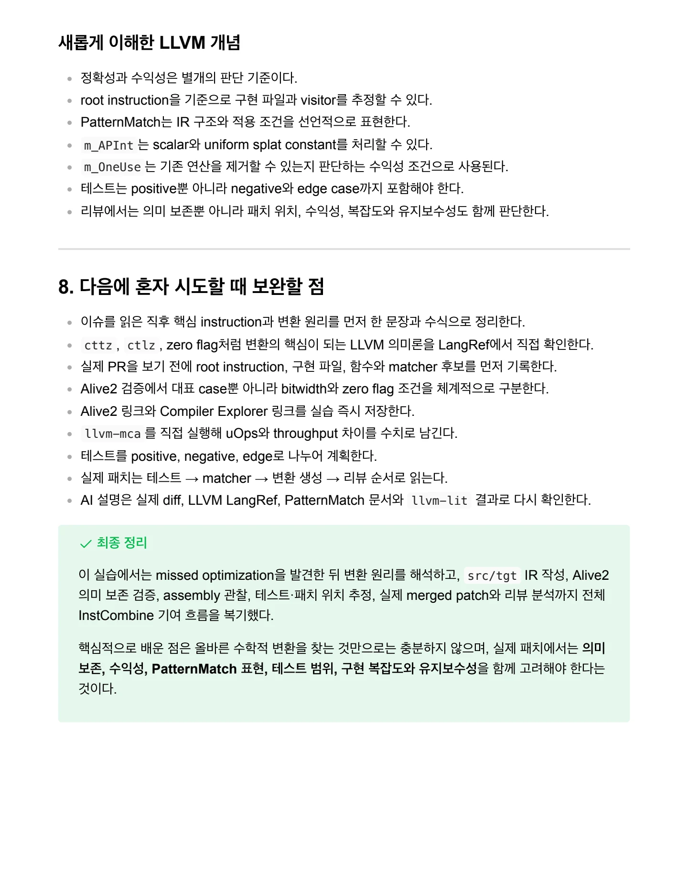
핵심 원리와 편집 주석
변환의 의미
cttz(X)는 최하위 비트 쪽의 연속된 0 개수다. 결과를 상수 C 이하로 제한하려면 입력의 bit C를 미리 1로 만들 수 있다.
umin(cttz(X), C) → cttz(X | (1 << C))
; 이 식은 C가 유효한 비트 위치인 범위를 설명한다.원래 zero count가 C보다 작으면 더 낮은 1비트가 결과를 결정한다. 그렇지 않으면 새로 설정한 bit C가 결과를 C로 고정한다.
경계와 적용 조건
- cttz와 ctlz에는 방향에 맞는 서로 다른 마스크를 사용한다.
- 상수 C가 0, 마지막 비트, 비트 폭 이상인 경우를 나누어 처리한다.
- 입력이 0일 때 intrinsic의 zero-undef 조건을 확인한다.
- 원래 zero count 결과의 one-use 조건을 확인한다.
- vector의 상수가 uniform splat인지 확인한다.
유효한 비트 위치를 벗어나는 C에는 단순히 1 << C를 만들면 안 된다. 이 경우의 umin 제거 가능성은 별도 조건으로 판단한다.
구현과 분석 순서
대상은 umin과 zero-count intrinsic의 조합이다. 작성자는 InstCombineCalls.cpp의 intrinsic 처리 경로를 예상한 뒤 실제 패치와 비교했다.
- 최소 src·tgt IR을 작성한다.
- Alive2로 변환 조건을 확인한다.
- InstCombine만 실행해 IR 변화가 생기는지 확인한다.
- 같은 llc 조건에서 기계어를 비교한다.
- 경계값과 적용하면 안 되는 사례를 테스트한다.
근거와 결과의 범위
자료가 인용한 이슈의 코퍼스 조사에는 cttz+umin 사례가 있지만 같은 조사에서 ctlz+umin 사례는 발견되지 않았다. 둘의 실제 사용 빈도가 같다고 가정하지 않는다.
작성자는 비교와 조건부 이동의 제거 가능성을 관찰했다. 정확성, 적용 빈도, 타깃별 비용은 각각 다른 질문이다.
문서 전문과 버전
- PDFPDF 원자료 · 15쪽Issue90000.pdf
각 자료는 별도의 버전입니다. 같은 주제라도 구현 상태·설명 범위·수치가 다를 수 있습니다.
관련 이슈와 PR
구현·병합 상태와 측정값은 해당 제출 자료의 작성 시점 기준입니다.